Quick Start: Using PE 2.7
Welcome to the PE 2.7 quick start guide. This document is a short walkthrough to help you evaluate Puppet Enterprise and become familiar with its features. Follow along to learn how to:
- Install a small proof-of-concept deployment
- Add nodes to your deployment
- Examine nodes in real time with live management
- Install a third-party Puppet module
- Apply Puppet classes to nodes with the console
Following this walkthrough will take approximately 30 minutes.
Creating a Deployment
A standard Puppet Enterprise deployment consists of:
- Many agent nodes, which are computers managed by Puppet.
- At least one puppet master server, which serves configurations to agent nodes.
- At least one console server, which analyzes agent reports and presents a GUI for managing your site.
For this deployment, the puppet master and the console will be the same machine, and we will have one additional agent node.
Preparing Your Proof-of-Concept Systems
To create this small deployment, you will need the following:
- At least two computers (“nodes”) running a *nix operating system supported by Puppet Enterprise.
- These can be virtual machines or physical servers.
- One of these nodes (the puppet master server) should have at least 1 GB of RAM. Note: For actual production use, a puppet master node should have at least 4 GB of RAM.
- Optionally, a computer running a version of Microsoft Windows supported by Puppet Enterprise.
- Puppet Enterprise installer tarballs suitable for the OS and architecture your nodes are using.
- A network — all of your nodes should be able to reach each other.
- An internet connection or a local mirror of your operating system’s package repositories, for downloading additional software that Puppet Enterprise may require.
- Properly configured firewalls.
- For demonstration purposes, all nodes should allow all traffic on ports 8140, 61613, and 443. (Production deployments can and should partially restrict this traffic.)
- Properly configured name resolution.
- Each node needs a unique hostname, and they should be on a shared domain. For the rest of this walkthrough, we will refer to the puppet master as
master.example.com, the first agent node asagent1.example.com, and the Windows node aswindows.example.com. You can use any hostnames and any domain; simply substitute the names as needed throughout this document.- All nodes must know their own hostnames. This can be done by properly configuring reverse DNS on your local DNS server, or by setting the hostname explicitly. Setting the hostname usually involves the hostname command and one or more configuration files, while the exact method varies by platform.
- All nodes must be able to reach each other by name. This can be done with a local DNS server, or by editing the
/etc/hostsfile on each node to point to the proper IP addresses. Test this by runningping master.example.comandping agent1.example.comon every node, including the Windows node if present.- Optionally, to simplify configuration later, all nodes should also be able to reach the puppet master node at the hostname
puppet. This can be done with DNS or with hosts files. Test this by runningping puppeton every node.- The control workstation from which you are carrying out these instructions must be able to reach every node in the deployment by name.
Installing the Puppet Master
- On the puppet master node, log in as root or with a root shell. (Use
sudo -sto get a root shell if your operating system’s root account is disabled, as on Debian and Ubuntu.) - Download the Puppet Enterprise tarball, extract it, and navigate to the directory it creates.
- Run
./puppet-enterprise-installer. The installer will ask a series of questions about which components to install, and how to configure them.- Install the puppet master and console roles; the cloud provisioner role is not required, but may be useful if you later promote this machine to production.
- Make sure that the unique “certname” matches the hostname you chose for this node. (For example,
master.example.com.) - You will need the email address and console password it requests in order to use the console; choose something memorable.
- None of the other passwords are relevant to this quick start guide. Choose something random.
- Accept the default responses for every other question by hitting enter.
- The installer will then install and configure Puppet Enterprise. It will probably need to install additional packages from your OS’s repository, including Java and MySQL.
You have now installed the puppet master node. A puppet master node is also an agent node, and can configure itself the same way it configures the other nodes in a deployment. Stay logged in as root for further exercises.
Installing the Agent Node
- On the agent node, log in as root or with a root shell. (Use
sudo -sto get a root shell if your operating system’s root account is disabled.) - Download the Puppet Enterprise tarball, extract it, and navigate to the directory it creates.
- Run
./puppet-enterprise-installer. The installer will ask a series of questions about which components to install, and how to configure them.- Skip the puppet master and console roles; install the puppet agent role. The cloud provisioner role is optional and is not used in this exercise.
- Make sure that the unique “certname” matches the hostname you chose for this node. (For example,
agent1.example.com.) - Set the puppet master hostname as
master.example.com. If you configured the master to be reachable atpuppet, you can alternately accept the default. - Accept the default responses for every other question by hitting enter.
- The installer will then install and configure Puppet Enterprise.
You have now installed the puppet agent node. Stay logged in as root for further exercises.
Installing the Optional Windows Node
- On the Windows node, log in as a user with administrator privileges.
- Download the Puppet Enterprise installer for Windows.
- Run the Windows installer by double-clicking it. The installer will ask for the name of the puppet master to connect to; set this to
master.example.com.
You have now installed the Windows puppet agent node. Stay logged in as administrator for further exercises.
Adding Nodes to a Deployment
After installing, the agent nodes are not yet allowed to fetch configurations from the puppet master; they must be explicitly approved and granted a certificate.
Approving the Certificate Request
During installation, the agent node contacted the puppet master and requested a certificate. To add the agent node to the deployment, approve its request on the puppet master.
- On the puppet master node, run
puppet cert listto view all outstanding certificate requests. - Note that nodes called
agent1.example.comandwindows.example.com(or whichever names you chose) have requested certificates, and fingerprints for the requests are shown. - On the puppet master node, run
puppet cert sign agent1.example.comto approve the request and add the node to the deployment. Runpuppet cert sign windows.example.comto approve the Windows node.
The agent nodes can now retrieve configurations from the master.
Testing the Agent Nodes
During this walkthrough, we will be running puppet agent interactively. Normally, puppet agent runs in the background and fetches configurations from the puppet master every 30 minutes. (This interval is configurable with the runinterval setting in puppet.conf.)
- On the first agent node, run
puppet agent --test. This will trigger a single puppet agent run with verbose logging. - Note the long string of log messages, which should end with
notice: Finished catalog run in [...] seconds. - On the Windows node, open the start menu, navigate to the Puppet Enterprise folder, and choose “Run Puppet Agent,” elevating privileges if necessary.
- Note the similar string of log messages.
You are now fully managing these nodes. They have checked in with the puppet master for the first time, and will continue to check in and fetch new configurations every 30 minutes. They will also appear in the console, where you can make changes to them by assigning classes.
Viewing the Agent Nodes in the Console
You can now log into the console and see all agent nodes, including the puppet master node.
- On your control workstation, open a web browser and point it to https://master.example.com.
- You will receive a warning about an untrusted certificate. This is because you were the signing authority for the console’s certificate, and your Puppet Enterprise deployment is not known to the major browser vendors as a valid signing authority. Ignore the warning and accept the certificate. The steps to do this vary by browser; see here for detailed steps for the major web browsers.
- Next, you will see a login screen for the console. Log in with the email address and password you provided when installing the puppet master.
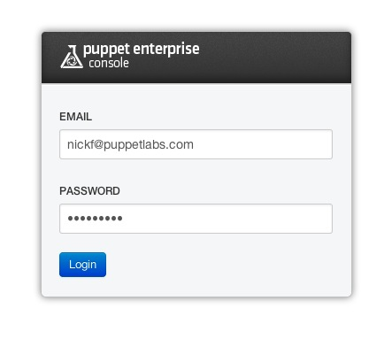
- Next, you will see the front page of the console, which shows a summary of your deployment’s recent puppet runs. Notice that the master and any agent nodes appear in the list of nodes:
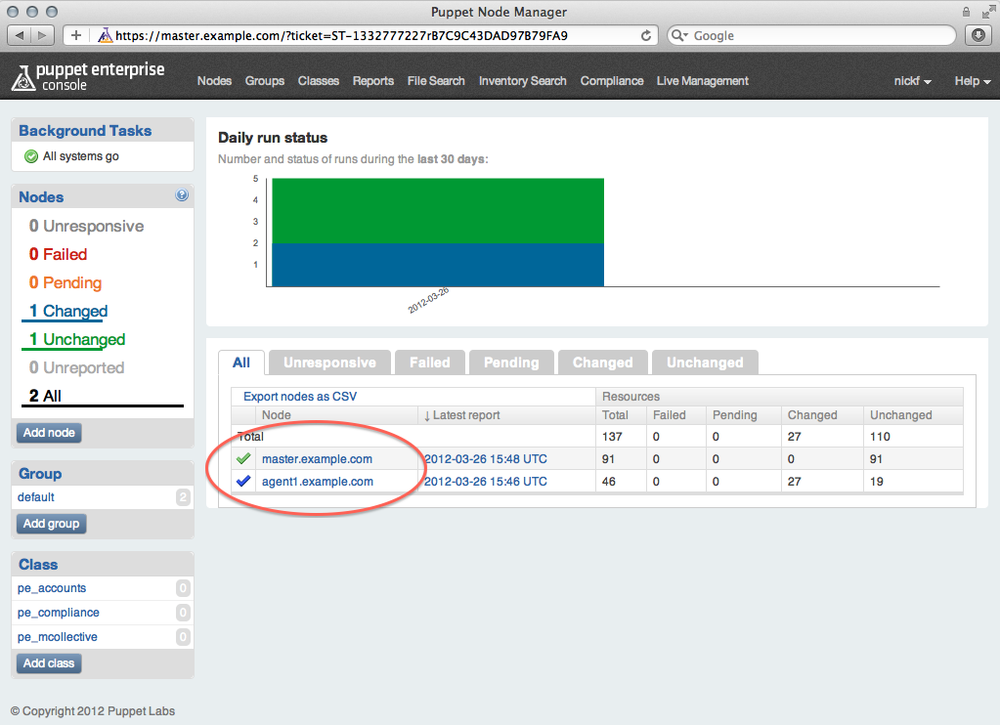
- Explore the console. Note that if you click on a node to view its details, you can see its recent history, the Puppet classes it receives, and a very large list of inventory information about it. See here for more information about navigating the console.
You now know how to find detailed information about any node in your deployment, including its status, inventory details, and the results of its last Puppet run.
Avoiding the Wait
Although puppet agent is now fully functional on any agent nodes, some other Puppet Enterprise software is not; specifically, the daemon that listens for orchestration messages is not configured. This is because Puppet Enterprise uses Puppet to configure itself.
Puppet Enterprise does this automatically within 30 minutes of a node’s first check-in. To fast-track the process and avoid the wait, do the following:
- On the console, use the sidebar to navigate to the default group:
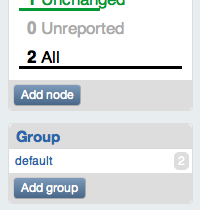
- Check the list of nodes at the bottom of the page for
agent1.example.com— depending on your timing, it may already be present. If so, skip the next two steps and go directly to the agent node. - If
agent1is not a member of the group already, click the “edit” button:
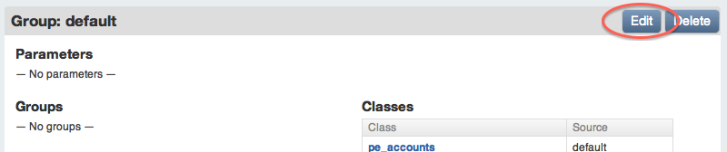
- In the “nodes” field, begin typing
agent1.example.com’s name. You can then select it from the list of autocompletion guesses. Click the update button after you have selected it.
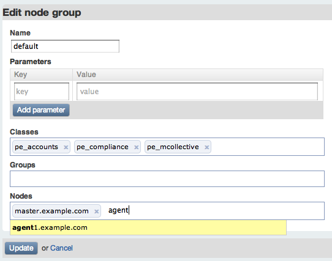
- On the first agent node, run
puppet agent --testagain. Note the long string of log messages related to thepe_mcollectiveclass. - You do not need to repeat this for the Windows node. Orchestration is not supported on Windows for this release of Puppet Enterprise.
The first agent node can now respond to orchestration messages, and its resources can be edited live in the console.
Using Live Management to Control Agent Nodes
Live management uses Puppet Enterprise’s orchestration features to view and edit resources in real time. It can also trigger Puppet runs and orchestration tasks.
- On the console, click the “Live Management” tab in the top navigation.
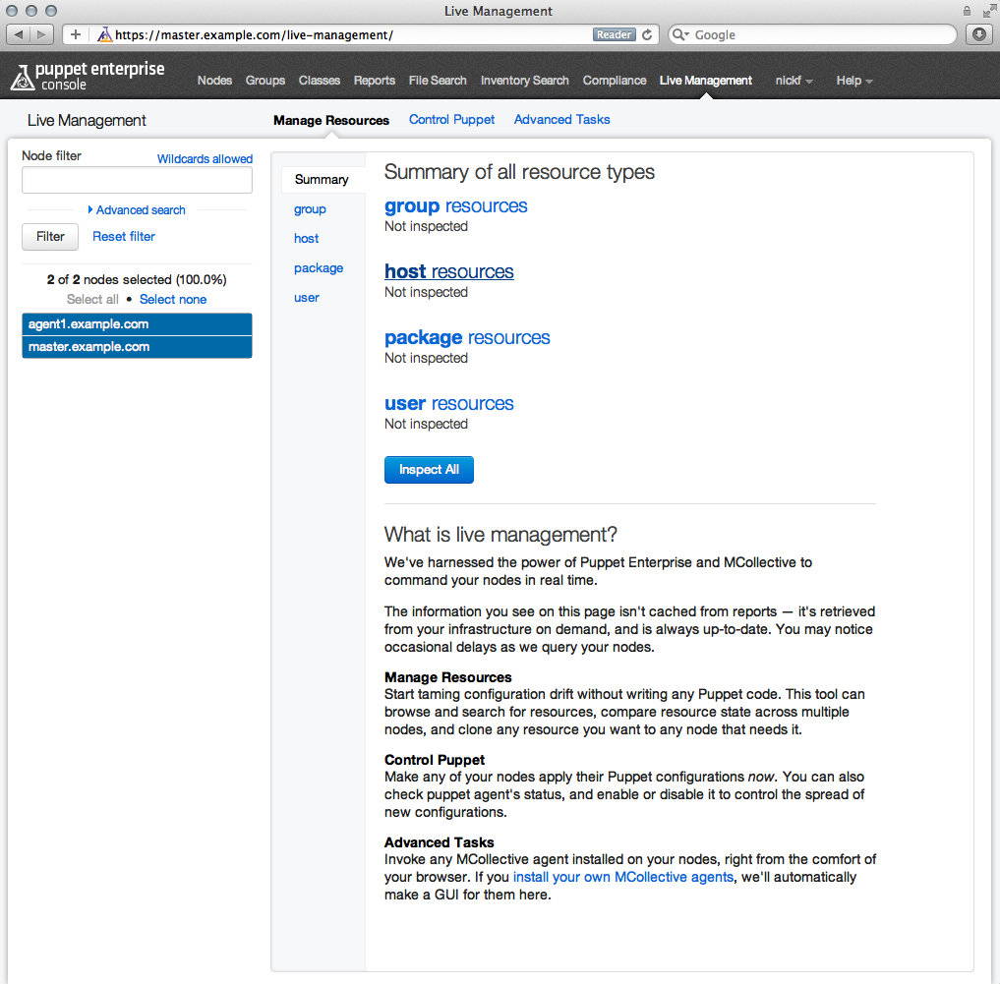
- Note that the master and the first agent node are visible in the sidebar, but the Windows node is not. Live management is not supported on Windows nodes for this release of Puppet Enterprise.
Discovering and Cloning Resources
- Note that you are currently in the “manage resources” tab. Click the “user resources” link, then click the “find resources” button:
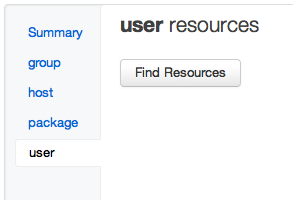
- Examine the complete list of user accounts found on all of the nodes currently selected in the sidebar node list. (In this case, both the master and the first agent node are selected.) Most of the users will be identical, as these machines are very close to a default OS install, but some users related to the puppet master’s functionality are only on one node:
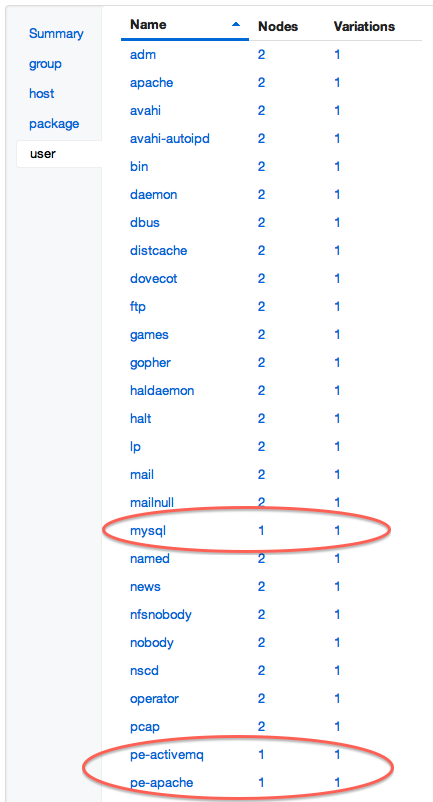
- Click the MySQL user, which is only present on the puppet master. (If the MySQL server was installed on both nodes, you can use a different user like
peadmin.)
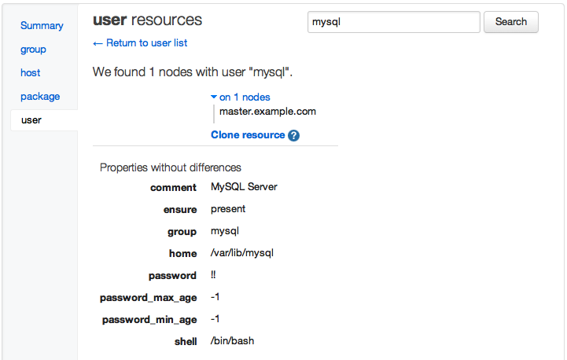
- Click the “Clone resource” link, then click the blue “Preview” button that appears. This will prepare the console to duplicate the mysql user across all of the nodes selected in the sidebar.
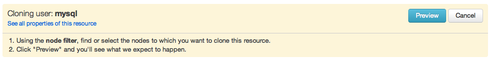
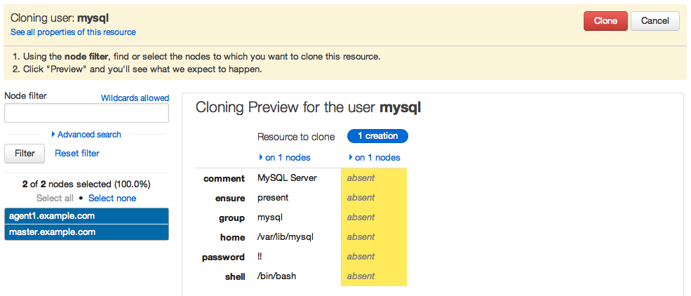
- Click the red “Clone” button to finish.
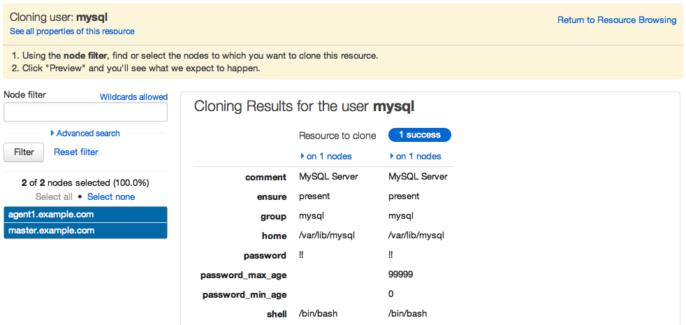
The
mysqluser is now present on both the master and the first agent node.You can clone user accounts, user groups, entries in the
/etc/hostsfile, and software packages using this interface. This can let you quickly make many nodes resemble a single model node.
Triggering Puppet Runs
- On the console, in the live management page, click the “control puppet” tab.
- Click the “runonce” action to reveal the red “Run” button, then click the “Run” button.
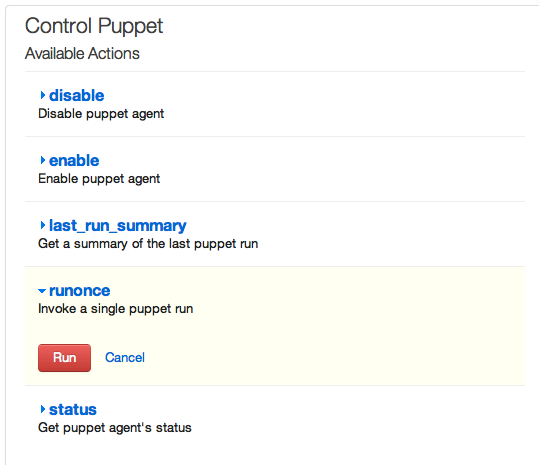
You have just triggered a puppet agent run on several agents at once; in this case, the master and the first agent node. The “runonce” action will trigger a puppet run on every node currently selected in the sidebar.
In production deployments, select target nodes carefully, as running this action on dozens or hundreds of nodes at once can put strain on the puppet master server.
Installing a Puppet Module
Puppet configures nodes by applying classes to them. Classes are chunks of Puppet code that configure a specific aspect or feature of a machine.
Puppet classes are distributed in the form of modules. You can save time by using pre-existing modules. Pre-existing modules are distributed on the Puppet Forge, and can be installed with the puppet module subcommand. Any module installed on the puppet master can be used to configure agent nodes.
Installing two Forge Modules
- On your control workstation, navigate to http://forge.puppetlabs.com/puppetlabs/motd. This is the Forge listing for an example module that sets the message of the day file (
/etc/motd), which is displayed to users when they log into a *nix system. - Navigate to https://forge.puppetlabs.com/puppetlabs/win_desktop_shortcut. This is the Forge listing for an example module that manages a desktop shortcut on Windows.
-
On the puppet master, run
puppet module search motd. This is an alternate way to find the same information as a Forge listing contains:Searching http://forge.puppetlabs.com ... NAME DESCRIPTION AUTHOR KEYWORDS puppetlabs-motd This module populates `/etc/motd` with the contents of ... @puppetlabs Testing jeffmccune-motd This manages a basic message of the day based on useful... @jeffmccune motd dhoppe-motd This module manages motd @dhoppe debian ubuntu motd saz-motd Manage 'Message Of The Day' via Puppet @saz motd -
Install the first module by running
puppet module install puppetlabs-motd:Preparing to install into /etc/puppetlabs/puppet/modules ... Downloading from http://forge.puppetlabs.com ... Installing -- do not interrupt ... /etc/puppetlabs/puppet/modules └── puppetlabs-motd (v1.0.0) - Install the second module by running
puppet module install puppetlabs-win_desktop_shortcut. (If you are not using any Windows nodes, this module is inert; you can install it or skip it.)
You have just installed multiple Puppet modules. All of the classes in them are now available to be added to the console and assigned to nodes.
Using Modules in the Console
Every module contains one or more classes. The modules you just installed contain classes called motd and win_desktop_shortcut. To use any class, you must tell the console about it and then assign it to one or more nodes.
- On the console, click the “Classes” link in the top navigation bar, then click the “Add class” button in the sidebar:

- Type the name of the
motdclass, and click the “create” button:
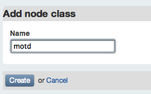
- Do the same for the
win_desktop_shortcutclass. - Navigate to
agent1.example.com(by clicking the “Nodes” link in the top nav bar and clickingagent1’s name), click the “Edit” button, and begin typing “motd” in the “classes” field; you can select themotdclass from the list of autocomplete suggestions. Click the “Save changes” button after you have selected it.
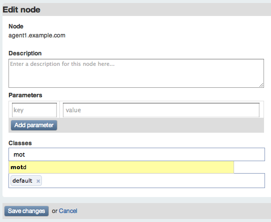
- Note that the
motdclass now appears in the list ofagent1’s classes. - Navigate to
windows.example.com, click the edit button, and begin typing “win_desktop_shortcut” in the “classes” field; select the class and click the “save changes” button. - Note that the
win_desktop_shortcutclass now appears in the list ofwindows.example.com’s classes. - Navigate to the live management page, and select the “control Puppet” tab. Use the “runonce” action to trigger a puppet run on both the master and the first agent. Wait one or two minutes.
-
On the first agent node, run
cat /etc/motd. Note that its contents resemble the following:The operating system is CentOS The free memory is 82.27 MB The domain is example.com - On the puppet master, run
cat /etc/motd. Note that its contents are either empty or the operating system’s default, since themotdclass wasn’t applied to it. - On the Windows node, choose “Run Puppet Agent” from the start menu, elevating privileges if necessary.
- View the desktop; note that there is a shortcut to the Puppet Labs website.
Puppet is now managing the first agent node’s message of the day file, and will revert it to the specified state if it is ever modified. Puppet is also managing the desktop shortcut on the Windows machine, and will restore it if it is ever deleted or modified.
For more recommended modules, search the Forge or check out the Module of the Week series on the Puppet Labs blog.
Summary
You have now experienced the core features and workflows of Puppet Enterprise. In summary, a Puppet Enterprise user will:
- Deploy new nodes, install PE on them, and add them to their deployment by approving their certificate requests.
- Use pre-built modules from the Forge to save time and effort.
- Assign classes to nodes in the console.
- Use live management for ad-hoc edits to nodes, and for triggering puppet agent runs when necessary.
Next
In addition to what this walkthrough has covered, most users will also:
- Edit modules from the Forge to make them better suit the deployment.
- Create new modules from scratch by writing classes that manage resources.
- Examine reports in the console.
- Use a site module to compose other modules into machine roles, allowing console users to control policy instead of implementation.
- Assign classes to groups in the console instead of individual nodes.
To learn about these workflows, continue to the writing modules quick start guide.
To explore the rest of the PE 2.7 user’s guide, use the sidebar at the top of this page, or return to the index.